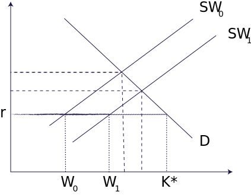

Capital Market Imperfections
Capital Market Framework
Demand curve is reflected by Tobin's Q that is it reflects the investment opportunities sorrounding a firm (i.e. expected future profitability). .
The line throught \(r\) is a horizontal straight line representing a prefect capital market. This way an investor will reach the optimal capital stock \(K*\). The optimal capital stock is determined at K* where the expected marginal profitability of capital equals the interest rate (risk adjusted). Horizontal supply curve doesn't make any difference whether you are using internal or external funds to finance investments.
In the presence of incentive problems and costly monitoring of managers actions, external suppliers of funds to firms require a higher return to compensate them for these monitoring costs and the potential moral hazard associated with managers control over the allocation of investment funds. The firm perceives the opportunity cost of internal funds to be the market rate of interest and it can borrow and lend at that rate in the capital market.
What is Soft Capital?
Organizational, maintenance expenditures and managerial ability are known as soft capital. They improve because of economies of scale.
All these assumes that there is no information assymetry.
Suppose there is an entrepreneur with net worth \(W_o\). This entrepreneur undertakes a project with an investment of capital \(K\). Rest of the capital comes from investors outside. So the payment to these investors is contingent upon the actual profits.
The project will only be undertaken if it produces a postive net output. However actual output can be greater than or less than expected output which is uncertain.
The entrepreneur has the choice of investing \(W_o\) at the interest \(r\). Hence the future value of the opportunity cost of undertaking this investment project is \(W_o(1+r)\). That is if he invests this money in the capital market he would get \(W_o(1+r)\). Therefore, a risk neutral investor will go ahead with the investment project only if output less payments to external investors exceeds \(W_o(1+r)\).
If the entrepreneur is seeking external funds then he is the principal and outside investors are the agents. Suppose that the principals (holders of claims on the firm) cannot monitor perfectly the allocation of funds by the agent (the firm insider). In this case the financial contract between the principals and the agent will have to allign incentives as well as arrange repayments.
Expenditures on hard capital are observable but expenditure on soft capital is not. If entrepreneur buys a machinery can be observed but expenditure on manegerial ability cannot be observed. Suppose that expenditures on capital are observable to outside lenders while expenditures on “soft capital” are not. The entrepreneur may be tempted to divert soft capital funds to personal gain.
Hence there is a risk of mis-allocation involved in how entrepreneurs allocate funds.
Let us re-observe the diagram.
Note that the supply curve has a kink from where it becomes upward sloping.
External investors understand this and modify the financial contract to mitigate incentives to cheat.
One consequence of this is that desired capital \(K*\) may exceed actual capital \(K_0\) and this gap will depend inversely on the entrepreneurs net worth.
Formally, the contract between the entrepreneur and suppliers of funds includes an incentive constraint that the entrepreneur's gain from honest action exceeds the gain from diverting funds. When the incentive constraint binds, actual investment, K, increases with increases in net worth,W, holding constant investment opportunities. This is because an increase in net worth reduces the entrepreneurs incentive to misallocate funds.
Intuition behind \(S\) curve
The \(S\) curve has two components. The horizontal segment up to a level of funds, \(W\), the entrepreneurs net worth. In this range no agency costs arise.
Why \(S\) schedule is upward sloping for the levels of information cost greater than \(W\)?
When the risk of opportunistic behavior is present, uncollateralized lending requires that lenders be compensated for information costs. So lenders will supply fund at a higher cost \(r\). Hence for levels of net worth greater than net worth W the S schedule is upward sloping. In other words the shadow cost to the entrepreneur of uncollateralized external financing exceeds that of internal financing. This means that because lenders/investors fear an opportunistic behaviour by entrepreneur therefore they require a compensation for the risk they are bearing and hence slope of the S curve reflects the information costs of uncollateralized financing. The higher are the marginal informational costs the steeper is the upward sloping portion.
Relationship between the Investments, Net Worth and Information Costs
If a firm does not face any information cost, then \(S\) schedule is horizontal, an increase in net worth independent of changes in investment opportunities has no effect on investment. Intuition is simple, since there are no information cost hence investors do not seek any compensation for risk and are willing to lend at interest rate \(r\) which is same as the cost of internal finance. Therefore, there is clearly an under investment or sub-optimal investment relative to the case where informational problems are absent.
Once investment reaches \(K*\) further increases in net worth have no effect on the investment decision. Therefore, for the firms with sufficient net worth - net worth is independent of changes in investment opportunities.
Equilibrium Capital Stock
The equilibrium Capital Stock for the firm is determined by the intersection of \(D\) and \(S\) curves at \(K_0\).